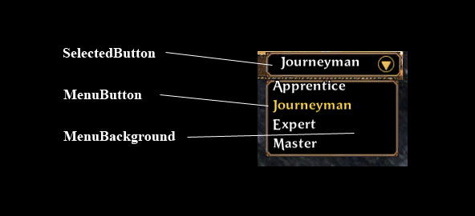

The ComboBox provides a window-style combo box control. This Window element is an automated combination of several other window components.
| ComboBox | The ComboBox provides a window-style combo box control. |
| Implementation Details | The ComboBox is a combination window element that automates combo-box behavior from a set of more basic window components. |
| XML Definition | This is the ComboBox xml definition. |
| XML Tag | |
| Required Attributes | You need to specify valid values for all of these elements to get the ComboBox to create properly. |
| selectedbutton | The name of a Button definition for the main drop-down button. |
| menuitembutton | The name of a Button definition to use for each menu item in the drop down list. |
| menubackground | The name of a Window definition to use for the drop-down menu. |
| Optional Attributes | You can specify thesea attributes |
| scrollbar | The name of a VerticalScrollbar definition to be used when the combo box contains more items than can be displayed on the screen at once. |
| maxvisibleitems | The maximum number of items that can be displayed on the screen at once. |
| Elements | |
| MenuButtonOffset | The offset of the menu buttons within their background. |
| Window Callbacks | These are the ComboBox specific callback events. |
| Callbacks | |
| OnSelChanged | Called when the selected menu item is changed. |
| Functions | |
| Functions | |
| ComboBoxAddMenuItem() | Adds a new item to the menu list. |
| ComboBoxClearMenuItems() | Clears out all items currently in the menu. |
| ComboBoxSetSelectedMenuItem() | Sets the current selected menu item |
| ComboBoxGetSelectedMenuItem() | Returns the index of the current selected menu item |
| ComboBoxGetSelectedText() | Returns the text of the current selected menu item |
| ComboBoxSetDisabledFlag() | Sets if ComboBox is disabled. |
| ComboBoxGetDisabledFlag() | Returns if the ComboBox is currently disabled. |
| ComboBoxIsMenuOpen() | Returns if the ComboBox is currently open. |
| ComboBoxExternalOpenMenu() | Lua-exposed function for the OpenMenu() wrapper, ExternalOpenMenu(). |
The ComboBox is a combination window element that automates combo-box behavior from a set of more basic window components.
The combo box is comprised of the following components:

This is the ComboBox xml definition.
| XML Tag | |
| Required Attributes | You need to specify valid values for all of these elements to get the ComboBox to create properly. |
| selectedbutton | The name of a Button definition for the main drop-down button. |
| menuitembutton | The name of a Button definition to use for each menu item in the drop down list. |
| menubackground | The name of a Window definition to use for the drop-down menu. |
| Optional Attributes | You can specify thesea attributes |
| scrollbar | The name of a VerticalScrollbar definition to be used when the combo box contains more items than can be displayed on the screen at once. |
| maxvisibleitems | The maximum number of items that can be displayed on the screen at once. |
| Elements | |
| MenuButtonOffset | The offset of the menu buttons within their background. |
You need to specify valid values for all of these elements to get the ComboBox to create properly.
The name of a Window definition to use for the drop-down menu. The background will be sized automatically to fit the number of elements added to the menu. This window can contain child windows, but should have anchors set up to resize correctly.
A string value, which is the name of a valid Window.
The name of a VerticalScrollbar definition to be used when the combo box contains more items than can be displayed on the screen at once.
A string value, which is the name of a valid VerticalScrollbar.
The maximum number of items that can be displayed on the screen at once. If the combo box contains more than these items, the scroll bar will be shown. If no value is specified, the ComboBox will automatically caculate a max based on how many menu buttons would fit on half of the screen height.
A number value.
The offset of the menu buttons within their background.
<MenuButtonOffset x="10" y="10" />
| x | The x-pixel offset from the top left corner of the menu background. |
| y | The y-pixel offset from the top left corner of the menu background. |
| x | 0 |
| y | 0 |
These are the ComboBox specific callback events.
| Callbacks | |
| OnSelChanged | Called when the selected menu item is changed. |
Called when the selected menu item is changed.
SomeComboBox.OnSelChanged( selectedIndex )
| selectedIndex | (number) The index of the newly selected item. ( 1 through the max number of items in the menu ). |
| Functions | |
| ComboBoxAddMenuItem() | Adds a new item to the menu list. |
| ComboBoxClearMenuItems() | Clears out all items currently in the menu. |
| ComboBoxSetSelectedMenuItem() | Sets the current selected menu item |
| ComboBoxGetSelectedMenuItem() | Returns the index of the current selected menu item |
| ComboBoxGetSelectedText() | Returns the text of the current selected menu item |
| ComboBoxSetDisabledFlag() | Sets if ComboBox is disabled. |
| ComboBoxGetDisabledFlag() | Returns if the ComboBox is currently disabled. |
| ComboBoxIsMenuOpen() | Returns if the ComboBox is currently open. |
| ComboBoxExternalOpenMenu() | Lua-exposed function for the OpenMenu() wrapper, ExternalOpenMenu(). |
Adds a new item to the menu list. The first item added is at index 1, the second item added is at index 2, and so on.
| comboBoxName | (string) The name of the ComboBox. |
| menuItemText | (wstring) Text for the menu item. |
| nil | no return value |
ComboBoxAddMenuItem("CareerWindowOrderCombo", L"Apprentice")
ComboBoxAddMenuItem("CareerWindowOrderCombo", L"Journeyman")
ComboBoxAddMenuItem("CareerWindowOrderCombo", L"Expert")
ComboBoxAddMenuItem("CareerWindowOrderCombo", L"Master")Clears out all items currently in the menu.
| comboBoxName | (string) The name of the ComboBox. |
| nil | no return value |
ComboBoxClearMenuItems("CareerWindowOrderCombo")Sets the current selected menu item
| comboBoxName | (string) The name of the ComboBox. |
| menuItemIndex | (number) The index of the menu item to select. Must be between 1 and the current number of menu items. |
| nil | no return value |
ComboBoxSetSelectedMenuItem( "CareerWindowOrderCombo", 1 )
Returns the index of the current selected menu item
| comboBoxName | (string) The name of the ComboBox. |
| menuItemIndex | (number) The index of the currently selected menu item. |
local curSel = ComboBoxSetSelectedMenuItem( "CareerWindowOrderCombo" )
Returns the text of the current selected menu item
| comboBoxName | (string) The name of the ComboBox. |
| menuItemText | (wstring) The text of the currently selected menu item. |
local text = ComboBoxGetSelectedText( "CareerWindowOrderCombo" )
Sets if ComboBox is disabled. When disabled, the selected button will display it’s ‘disabled’ state, the drop down menu will not function.
| comboBoxName | (string) The name of the ComboBox. |
| isDisabled. | (boolean) Should the ComboBox be disabled? |
| nil | no return value |
ComboBoxSetDisabledFlag("GroupOptionsWindowLootModeCombo", GameData.Player.isGroupLeader == false )Returns if the ComboBox is currently disabled.
| comboBoxName | (string) The name of the ComboBox. |
| isDisabled. | (boolean) Is the ComboBox currently disabled? |
local disabled = ComboBoxGetDisabledFlag("GroupOptionsWindowLootModeCombo" )Returns if the ComboBox is currently open.
| comboBoxName | (string) The name of the ComboBox. |
| isOpen | (boolean) Is the ComboBox currently open? |
local isOpen = ComboBoxIsMenuOpen("GroupOptionsWindowLootModeCombo" )Lua-exposed function for the OpenMenu() wrapper, ExternalOpenMenu(). Allows Lua to provide alternative ways of opening / closing the combo box.
| comboBoxName | (string) The name of the ComboBox. |
| bool | true iff the menu was opened (i.e. it was closed previously). |
ComboBoxExternalOpenMenu("GroupOptionsWindowLootModeCombo")